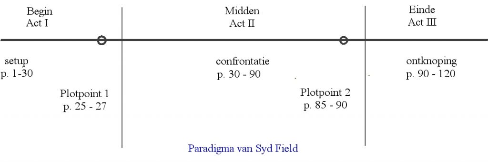

Exposición oral de la programación didáctica
Seguro que has escuchado más de una vez que somos seres sociales y que nos gusta contar historias. Por eso, a lo largo de la historia, hemos dibujado en paredes y rocas, hemos desarrollado lenguajes complejos y hemos mantenido vivas historias como el Cantar de Mío Cid. Por naturaleza, nos gusta transmitir nuestros valores culturales. Y también nos apasiona que un narrador nos haga viajar a través de su discurso. Y eso es lo que tienes que conseguir en la exposición oral de la programación didáctica.
En este artículo vamos a ver cómo las películas utilizan una estructura y algunos recursos para hacer interesante la historia y mantener la atención del público. El objetivo es llevar esta técnica a la exposición de la programación y la unidad didáctica para que, en el tiempo que estés hablando, el tribunal no quiera dejar de escucharte.
¿No tienes hilo conductor? No importa, puedes brillar igual
El hilo conductor es un recurso que le da riqueza a cualquier discurso, porque nos cuenta una historia que nos engancha. Pero ¿sabes qué? Puedes destacar igual o más sin un hilo conductor, así que si no se te ocurre nada o no te apetece incluir un hilo conductor, no te sientas mal, tienes otras opciones. Te cuento todos mis trucos para una exposición de 10:

Hilo conductor en la exposición de la programación didáctica
Uno de los grandes errores que cometemos a veces al hablar en público, también en la exposición oral de la programación docente, es que no existe un nexo entre las partes. Más bien, dejamos caer un montón de ideas y confiamos en que el oyente las ordene. Pero eso no va a suceder. Ponte en su lugar: cuando estás escuchando a alguien no piensas en cada una de las palabras que pronuncia, sino que te haces una idea global. Además, en un discurso oral, entra en juego el lenguaje no verbal en un porcentaje mucho mayor que las palabras en sí.
Si no quieres que tus ideas caigan en saco roto, debes elaborar un hilo conductor para tu programación didáctica. No tienes que inventarte toda una historia ni buscar ideas extravagantes, basta con que fijes un objetivo: dónde empiezas, a dónde quieres llegar y qué camino recorres.
El objetivo de la exposición oral
Si piensas en El Señor de los Anillos, Shrek, Deadpool, La Isala Mínima o cualquier otra película, verás que todos sus protagonistas tienen algo en común: persiguen un objetivo. De hecho es así como se construyen las historias: se define un personaje y se le asigna un objetivo o un deseo, el cual le empuja a actuar.
En el caso de la exposición oral de la programación didáctica, el protagonista eres tú y debes plantear un objetivo para la defensa que sirva de hilo conductor. Por ejemplo, «vamos a ver cómo una metodología de aprendizaje basado en proyectos es la mejor opción para esta asignatura». Como siempre recomendamos, reflexiona sobre tu programación, tu materia, el curso al que te diriges, tu forma de enseñar,… y, en función de esos factores, define tu objetivo.
La estructura de la exposisición oral
El guionista estadounidense Syd Field definió una estructura para las narraciones audiovisuales, dividiéndolas en tres partes proporcionales (y esto seguro que te suena): planteamiento, desarrollo y desenlace.
Además, incluye dos puntos clave dentro de esa estructura: el primer punto de giro, que define el objetivo del personaje, y el segundo punto de giro, que es el momento en el que el protagonista está más lejos de alcanzar su objetivo. Es el momento de bajón de la película, donde luchamos por que no se nos caiga la lagrimilla.

El paradigma de Syd Field refleja una estructura narrativa que se viene usando durante siglos. Ya en la Antigua Grecia se propuso este modelo de escritura. Y si ha permanecido tantos años, es porque funciona. Así que debes aplicarlo a tu exposición oral de la programación didáctica. ¿Cómo? Vamos a verlo.
Planteamiento
Utiliza un cuarto de tu tiempo, aproximadamente, para plantear tu propuesta. Si cuentas con media hora, no te pases de los 8 minutos. Si tienes 20 minutos, reduce esta parte a 5 minutos y si tienes más tiempo, actúa en proporción.
Lo que debes contar aquí es quién eres, para qué curso y especialidad programas y por qué. Así la exposición de la programación didáctica quedará contextualizada de inmediato. En las películas, el primer acto se utiliza para presentar la acción y los personajes. Así, vemos a Shrek, por ejemplo, viviendo un día normal en su ciénaga. Esto caracteriza al personaje y permite que el espectador, rápidamente, sepa cómo es él. Del mismo modo, debes reflejar tu personalidad y dejar ver al tribunal cómo eres como profe.
En esta parte, las películas también presentan al resto de personajes (Asno, Fiona, Lord Farquad,…). También tú debes presentar al resto de intervinientes, es decir, a tu grupo de alumnos. Esta información, la has desarrollado en la contextualización de tu programación didáctica.
Por tanto, en el planteamiento, debes desarrollar la introducción de tu programación didáctica (si sigues el esquema de programación didáctica que proponemos en Vírgula). Explica en 5-8 minutos quién y cómo eres y quiénes te van a acompañar en la aventura. Asimismo, propón un objetivo para la exposición oral que sirva de hilo conductor para unir principio y final.
Desarrollo
Una vez que has ubicado al tribunal, que sabemos dónde estamos y hacia dónde nos dirigimos, es el momento de darlo todo: expón los objetivos de tu programación didáctica, explica qué competencias trabajarás y cómo, qué contenidos vais a estudiar y cómo se distribuyen en el calendario escolar, qué metodología vas a seguir (incluyendo la atención a la diversidad) y cómo vas a evaluar el proceso de enseñanza-aprendizaje.
Esta parte te ocupará la mitad del tiempo de exposición frente al tribunal. Si tienes media hora, dedícale 15 minutos, aproximadamente. Si cuentas con 20 minutos, dedícale 10, etc.
✍️ Es muy importante que ensayes y tengas todo milimetrado, para no pasarte de tiempo ni quedarte corto/a. Además esto te dará seguirad, porque sentirás que está todo bajo control.
Recursos para mantener la atención
Un miedo que puede rondar nuestra cabeza es aburrir al tribunal. Y no es para menos. Si aburrimos al tribunal, vamos a aburrir aún más a los alumnos, así que, quienes te evalúen pueden pensar que no mereces la plaza. Pero si te fijas, en la TV, existe una gran diferencia entre un documental de La 2 y una película de acción o un thriller. La diferencia son los recursos que utiliza y que tú puedes aprovechar para mantener la atención del tribunal durante tu exposición oral. ¿Vemos algunos de esos recursos?
- Suspense: puede ser que al escuchar suspense te venga a la mente Alfred Hitchcock. Este director era el maestro del suspense y lo usaba en sus películas magistralmente. El suspense en cine consiste en revelar información al espectador, pero no al personaje. Así, por ejemplo, sufrimos cuando Fiona habla con Asno sobre su aspecto de ogresa y el miedo a que tiene de que Shrek no la quiera así. Nosotros sabemos que Fiona se refiere a sí misma, pero Shrek no sabe de su transformación y cree que habla de él. Como ves, tenemos información que él desconoce. Esto genera suspense. Más adelante en la película ese suspense se resuelve y el malentendido se evapora para dar paso al final feliz. En tu programación puedes aprovechar esto. No se trata de ocultar información al tribunal, pero sí puedes hacer preguntas y dejarlas en el aire un tiempo, para responderlas un poco más adelante. Esto mantendrá alerta a los miembros del tribunal y generará cierta tensión en ellos, que despertará su interés.
- Anticipación y cumplimiento: este es un recurso narrativo que acaricia la inteligencia del espectador. Se trata de ir dejando pistas sutiles que después ayuden a entender una situación o un hecho de la película. Volvemos a ver un ejemplo con Shrek. De camino a casa, cuando empieza a anochecer, Fiona se esconde en una cueva y cierra el paso con una puerta. Es una anticipación de lo que pasará después, en la secuencia que comentábamos antes. De nuevo, al anochecer, Fiona se esconde, pero esta vez Asno la ve. Entonces nos damos cuénta de qué le pasa a Fiona (es el cumplimiento) y podemos entenderlo gracias a las anticipaciones. En tu programación didáctica puedes usarlo también a tu favor. Deja caer sutilmente algunas ideas y retómalas después para darle sentido a tu discurso. Así, el tribunal percibirá que tienes la narración bien preparada, que todo tiene sentido y que tu propuesta didáctica es buena.
- Cliffhanger: literalmente, esta palabra significa «colgar del precipicio» y seguro que conoces bien la sensación. En las series se utiliza al final de los capítulos para invitar a ver el siguiente. ¡El cliffhanger es el responsable de que devoremos series en las plataformas digitales! Si has visto Juego de Tronos, seguro que recuerdas a Bran cayendo de la torre al final del primer capítulo. Y seguro que recuerdas haber visto el segundo capítulo porque el primero te dejó con ganas de más. ¡Haz lo mismo en tu exposición! Aprovecha momentos durante el desarrollo para intrigar al tribunal, pera despertar su curiosidad, para provocar que ansíen saber más, que sigas hablando.
✍️ Utiliza alguno de estos recursos para mantener y recuperar la atención del público. Eso sí, no te pases. Como se suele decir, lo poco agrada, lo mucho cansa.
Si retomamos el paradigma de Syd Field, ¿recuerdas que en el segundo acto había un punto de giro? En las películas es el momento de bajón, cuando parece que el protagonista se da por vencido y no va a conseguir su objetivo.
En tu caso, no es necesario que dramatices, pero sí aprovecha para relajar la tensión y hacer una pausa. Deja unos segundos de silencio para que el tribunal asimile la información que le has dado durante toda la exposición oral. Además, te permitirá diferenciar mejor esta segunda parte del final.
Desenlace
Para terminar tu exposición oral puedes usar otros 7-8 minutos o reducrilo a 3-5 y dejar tiempo para comentarios o preguntas que el tribunal quiera hacerte.
En el desenlace las películas resuelven la acción y relajan la tensión. En Shrek durante el tercer acto, el protagonista se entera de que Fiona le ama y comienza una carrera contrarreloj por parar la boda entre la princesa y Lord Farquad. En tu exposición puedes hacer un resumen de lo que has contado hasta ese momento y terminar con una conclusión que expique cómo has alcanzado el objetivo que proponías al principio.
Lo importante en este apartado es dejar con buen sabor de boca al tribunal y que se acuerden de ti. A veces, como estamos llegando al final, nos relajamos y terminamos la exposición de cualquier manera. No te dejes arrastrar por la miseria. Si quieres culminar esta exposición de película, debes mantener la intensidad hasta el final. Formula una frase contundente para terminar y deja claro que ya has dicho todo lo que tenías que decir. Después, solo te queda esperar la nota.
✍️ Utiliza esta forma de exponer también para la defensa de la unidad didáctica.
Ventajas de establecer un hilo conductor en la exposición oral de la programación didáctica
La primera persona que va a notar la diferencia vas a ser tú. Entre una exposición sin hilo conductor y una exposición con hilo conductor hay un abismo. Como decíamos al inicio, arrojar ideas una detrás de otra sin un sentido global no te va a favorecer. En cambio, llevar al tribunal desde un principio hasta un final, en un viaje en el que todo está pensado y tú llevas el contro, va a sumarte puntos. Nadie te puede garantizar la plaza, porque hay muchísimos factores que intervienen en esa decisión y sobre los que no podemos influir. Lo que sí te garantizamos es que si utilizas estas técnicas en la exposición oral de la programación didáctica vas a dejar huella.


Buenos días, Anabel:
Soy Raquel, estoy actualmente opositando para maestra de Inglés en Zaragoza.
Me encantan todos tus contenidos, te he descubierto hace muy poco. Es maravilloso lo claro que transmites y lo muchísimo que se nota lo que disfrutas y dominas el ámbito de la enseñanza.
Simplemente quería darte las gracias porque visualizar diverso material tuyo me ha ayudado muchísimo de mil maneras.
Haré sin duda contigo futuras formaciones para crecer como docente.
Enhorabuena y gracias de nuevo, de corazón.
Gracias, Raquel!! 🙂